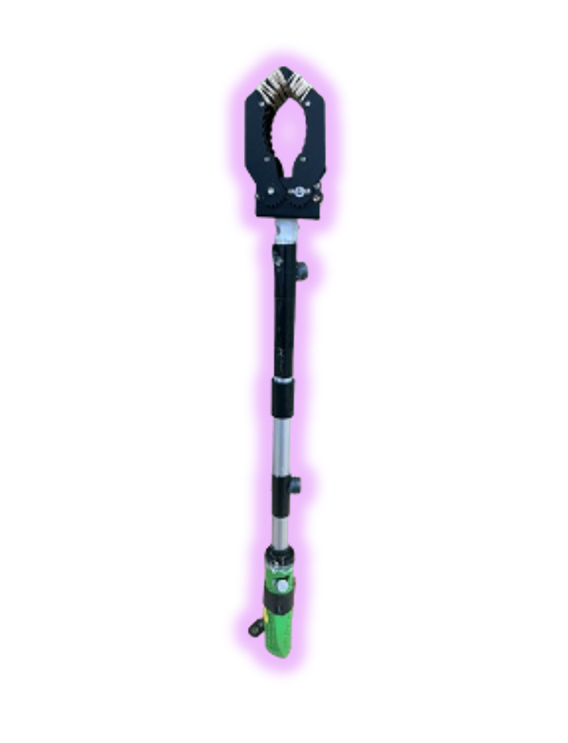
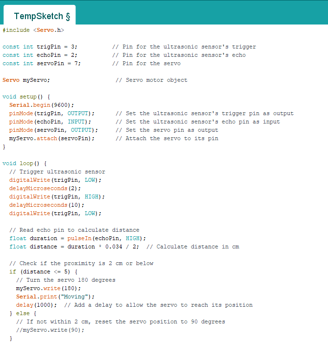

Brief Overview:
In Project Four, I am part of the IMPACT (Interdisciplinary, Mentorship, Practice, Applied, Community, Transformative) initiative, which involves a collaborative effort between students from various disciplines such as Engineering, Biology/Science, Occupational Therapy, and Medicine, as well as McMaster Alumni, Community Healthcare Partners, and volunteer clients. Our client for this year's IMPACT Initiative Project is Tiffany, and as ENGINEER 1P13 students, our team plays a significant role in this initiative. Our main objective is to devise a solution that enhances Tiffany's daily living. Our team has made the decision to develop a specialized gripper for Tiffany, designed to enhance her daily life and provide valuable assistance in her work environment. Refere to the picture below:
 Figure 1 - Gripper DesignedProject Contributions:
Throughout this project, I played a pivotal role in contributing to our team's success. I took the initiative to source the necessary parts for the gripper, ensuring that we had all the components required for its construction. Additionally, I actively participated in the assembly process, playing a key role in building the gripper to meet Tiffany's specific needs. Moreover, I introduced the innovative idea of incorporating a button mechanism to control the gripper's opening and closing, recognizing its potential to significantly ease Tiffany's daily tasks.
This concept was instrumental in enhancing the gripper's functionality and usability, particularly in a work setting. Furthermore, I played a crucial part in developing the code for the button and the motor, leveraging my programming skills to ensure seamless integration and operation. By contributing to the coding process, I helped optimize the gripper's performance and responsiveness, ultimately enhancing its utility for Tiffany's requirements. Refere to the pictures below:
 Figure 2 - Code Used Figure 3 - Gripper Prototype
Figure 3 - Gripper Prototype
Reflections:
Engaging in a reflective analysis of my individual contributions to Project Four, where I played a pivotal role in the development of the specialized gripper for Tiffany, prompts a thoughtful examination of my involvement in the project's mechanical and coding aspects. Initially, questions emerged regarding the procurement of essential parts and the construction process, leading me to ensure the availability of all necessary components and actively participate in the gripper's assembly. This reflective process underscores my commitment to the project's success and the fulfillment of Tiffany's needs. Furthermore, my introduction of the idea to incorporate a button mechanism for controlling the gripper's functionality sparked an inquiry into how this innovative feature could significantly enhance Tiffany's daily tasks and work responsibilities.
This questioning process underscored the importance of creativity and user-centric design in addressing real-world challenges, highlighting my dedication to improving the gripper's utility for our client. Moreover, as I delved into writing the code for the button and motor, I pondered over how to optimize the program for seamless integration and precise operation. This contemplation emphasized the interconnectedness of mechanical and computational elements in our project, highlighting the significance of my role in ensuring the gripper's efficiency and effectiveness for Tiffany's specific needs. Ultimately, my involvement in this project provided valuable insights into the interdisciplinary nature of engineering initiatives and the need for seamless collaboration between mechanical design and coding aspects. This reflective process underscored the importance of holistic problem-solving and highlighted my commitment to contributing to the overall success of the project. Ask Web&GPT-4 Monica